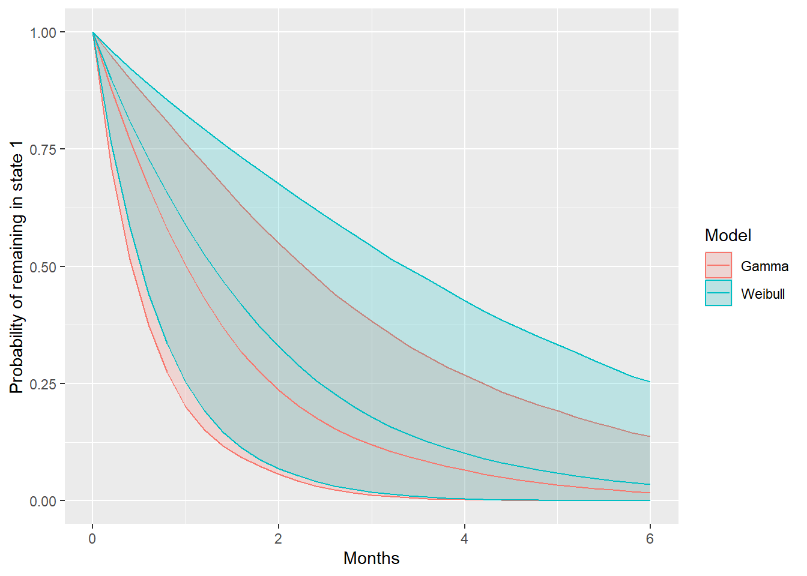

Semi-Markov models with msmbayes
Christopher Jackson chris.jackson@mrc-bsu.cam.ac.uk
2025-08-28
Source:vignettes/semimarkov.Rmd
semimarkov.RmdNon-Markov models have previously been difficult for intermittently observed data, since we do not know the times of entry to the states. For some transition structures, we may not even know whether or not any particular transition took place within an interval between observations. Hence it can be hard to discern how the hazard of transition out of a state depends on the time spent in that state.
msmbayes makes these models easier to use. It can fit
multi-state models where the sojourn distribution in any state has a
special two-parameter distribution. This relaxes the Markov assumption,
producing a semi-Markov model, where the transition rate out of a state
depends on how long the individual has spent in the state. The sojourn
distribution used for these models is a phase-type approximation to
a shape-scale distribution, The phase-type approximation idea was
introduced by Titman, 2014.
msmbayes introduces an easier way to obtain the
approximation, and makes these models accessible for the first time.
Full details will be given in a forthcoming paper.
msmbayes can also fit phase-type models directly - see
a separate vignette about these.
msm can also do this with two-phase models. However these
are awkward to use in practice for intermittently observed data. They
have several parameters, which are hard to interpret, and computation
tends to suffer from poor identifiability. By contrast, phase-type
approximations to shape-scale distributions have only two parameters,
and are based on well-understood parametric distributions.
Phase-type shape-scale distributions
The distribution has two parameters: shape \(a\) and scale \(b\). The probability distribution function is defined by
\[ F(x | a, b) = F_p(x | \boldsymbol{\lambda} = b \mathbf{h}(a)) \]
where \(F_p(x |
\boldsymbol{\lambda})\) is a phase-type distribution (with 5
phases by default) and vector of transition rates \(\boldsymbol{\lambda}\). The shape and scale
are mapped to the phase-type transition rates through a function \(\mathbf{h}()\), determined so that the
first three moments of the phase-type distribution are the same as those
of the Weibull or a Gamma, for a wide range of shape parameters. This
function is pre-determined (using the formulae from Bobbio et al.) and
stored in the msmbayes package. A default of 5 phases is
used. This process will be described more formally in a forthcoming
paper, but for now, the code is in the package source
(phaseapprox branch).
Covariates can be applied to the scale parameter \(b\), as a linear model on \(\log(b)\), giving an accelerated failure time model.
Additional assumptions are needed if there are multiple alternative states \(s\) that an individual can transition to immediately on leaving a state \(r\) that has a phase-type approximation. In
msmbayes, this transition is governed by a constant “next state” probability \(\pi_{rs}\), as is done in Titman, 2014. This assumes that the transition probability does not depend on the length of time spent in state \(r\) (the supplementary material to Titman, 2014 discusses more flexible alternatives).Covariates can also be applied to \(\pi_{rs}\) via a multiplicative model on the odds of transition.
Implementation in msmbayes
This vignette gives a demonstration of using semi-Markov models with
phase-type shape-scale distributions in msmbayes, based on
an artificial dataset.
Note: this vignette should not be used literally as a step-by-step recipe for an applied analysis. It is intended to demonstrate the range of functions available in the package and how to use them. An applied analysis should take account of the research question, including thoughtful choice of priors, computing appropriate outputs of interest, model checking and comparison.
Specifying a basic semi-Markov model
To specify the states given a semi-Markov model, specify the
pastates argument to msmbayes, say
pastates=2 if this is state 2, or
pastates=c(1,2) if both states 1 and 2 are semi-Markov.
To start with, we fit a two-state infection model to the basic data
infsim2 from the Examples
vignette. This is now made into a semi-Markov model. We compare a model
with the default Gamma approximation (in both states) to a model with a
Weibull for both states (setting the pafamily
argument).
If there is more than one state given a semi-Markov model, different distributions can be used for different states, e.g
pastates=c(1,2), pafamily=c("weibull","gamma").
library(msmbayes)
Q <- rbind(c(0,1), c(1,0))
drawsg <- msmbayes(data=infsim2, state="state", time="months", subject="subject",
pastates=1:2,
Q=Q, fit_method="optimize")
drawsw <- msmbayes(data=infsim2, state="state", time="months", subject="subject",
pastates=1:2, pafamily="weibull",
Q=Q, fit_method="optimize")In this vignette, the Bayesian models are all fitted using posterior mode optimisation and Laplace approximation (MCMC would be safer - avoiding the risk of finding a local optimum or mis-estimating uncertainty - but a lot slower).
Summarising shape parameters
Shape parameters around 1.0 (exponential distribution) are supported for both states 1 and 2, indicating no evidence that the model is semi-Markov. Indeed, the data were simulated with exponential sojourn distributions.
Note that the summary method for msmbayes
objects compares the posterior distribution with the prior. The prior is
summarised as a string displaying the median and 95% credible interval,
or an rvar object containing a full posterior sample. See
the main msmbayes vignette for an
explanation of the rvar format used in the column
“posterior” and how to summarise it.
summary(drawsg, pars="shape")## # A tibble: 2 × 6
## name from posterior mode prior_string prior
## <chr> <chr> <rvar[1d]> <dbl> <chr> <rvar[1d]>
## 1 shape 1 1.1 ± 0.38 1.02 1.0 (0.38, 2.66) 1.1 ± 0.6
## 2 shape 2 1.0 ± 0.12 1.00 1.0 (0.38, 2.66) 1.1 ± 0.6
summary(drawsw, pars="shape")## # A tibble: 2 × 6
## name from posterior mode prior_string prior
## <chr> <chr> <rvar[1d]> <dbl> <chr> <rvar[1d]>
## 1 shape 1 1.0 ± 0.18 1.04 1.0 (0.61, 1.63) 1 ± 0.26
## 2 shape 2 1.1 ± 0.25 1.13 1.0 (0.61, 1.63) 1 ± 0.26Choice of priors
When fitting these models, we used the default prior distributions. For the shape parameters, the defaults are chosen to give flexible and numerically stable model families based on the Weibull and Gamma. For example, the default SD of the Weibull distribution was chosen to rule out values for the shape parameter lower than about 0.6, for which the phase-type approximation deviates from the Weibull and becomes increasingly unstable as the shape decreases.
In a real application, instead of accepting the defaults, a better approach to specifying priors is to draw random samples from priors and transform these to more interpretable quantities (e.g. the mean sojourn time) to determine what priors a given choice implies for those interpretable quantities - starting with the defaults, and modifying by trial and error if necessary.
A more detailed illustration of specifying priors informed by background information will be given in the appendix of a forthcoming paper.
Comparing the Gamma and Weibull
We can roughly compare the fit of these models through their likelihoods. The mode of the log posterior (i.e. the maximum penalised likelihood, with the priors considered as a penalty) essentially measures in-sample predictive ability. For a multi-state model, that is the ability to predict an individual’s next observation given their current and previous observations. Since the two models being compared here have the same number of parameters, and the priors are of similar strength, any improvement in the likelihood would suggest better generalisability. In this case, the maximum log posteriors for these two models are very similar.
(Cross-validation would be a better way of comparing, but it is unclear how that might be set up with an intermittently-observed multistate model)
loglik(drawsg)## name posterior mode
## 1 loglik -143.7 ± 2.21 -142.235930
## 2 logprior -5.8 ± 0.77 -5.399696
## 3 logpost -149.5 ± 2.29 -147.635626
loglik(drawsw)## name posterior mode
## 1 loglik -144.8 ± 9.2 -142.200516
## 2 logprior -4.7 ± 1.4 -3.886514
## 3 logpost -149.5 ± 10.0 -146.087029Sojourn distribution
The function soj_prob() computes the probability of
staying in a given state, at a sequence of times, from a fitted
msmbayes() model. It can be used to plot a kind of
“survival curve” for the sojourn distribution in a state. In this case,
there is little difference between the Weibull and Gamma distributions,
and a lot of uncertainty.
library(ggplot2)
library(dplyr)
t0 <- seq(0, 6, by=0.2)
spg <- soj_prob(drawsg,state=1,t=t0) |> mutate(Model="Gamma")
spw <- soj_prob(drawsw,state=1,t=t0) |> mutate(Model="Weibull")
sp <- rbind(spg, spw)
summary(sp) |>
ggplot(aes(x=time, y=median, col=Model)) +
geom_ribbon(aes(ymin=q5, ymax=q95, fill=Model), alpha=0.2) +
geom_line() +
xlab("Months") + ylab("Probability of remaining in state 1")
The mean of the sojourn distribution, the mean time to the next
transition on entry to a state, is given by mean_sojourn().
The mean of the phase-type approximation should agree with the mean of
the distribution that it was based on, since the approximation was
designed to match the first three moments. This is verified here for the
Gamma distribution, which has mean defined by
shape x scale.
mean_sojourn(drawsg)## # A tibble: 2 × 3
## state posterior mode
## <int> <rvar[1d]> <dbl>
## 1 1 1.61 ± 0.78 1.51
## 2 2 0.29 ± 0.14 0.261
shape <- summary(drawsg, pars="shape")
scale <- summary(drawsg, pars="scale")
shape$posterior * scale$posterior## rvar<4000>[2] mean ± sd:
## [1] 1.61 ± 0.78 0.29 ± 0.14Specifying a semi-Markov model with covariates
We now extend the Gamma model to include a covariate (binary, representing sex) on the scale parameter for the distribution in both states. The log likelihood hardly changes, as we might expect, as there was no covariate effect assumed when the data were simulated, so this model includes a lot of extra unnecessary parameters.
The prior for the shape parameter in this example is tightened to
support a slightly smaller range of values (up to
exp(2*0.4) = 2.2). With the default prior SD of 0.5, the
optimisation fails to converge, likely due to weak identifiability. We
see in the posterior summary that in fact the posteriors for the shape
parameters are similar to the priors, indicating weak information in the
data about these parameters.
drawsc <- msmbayes(data=infsim2, state="state", time="months", subject="subject",
pastates=1:2,
priors = list(msmprior("logshape", mean=0, sd=0.4)),
covariates = list(scale(1) ~ male, scale(2) ~ male),
Q=Q, fit_method="optimize")
loglik(drawsc)## name posterior mode
## 1 loglik -151 ± 21 -142.13004
## 2 logprior -12 ± 1 -11.02586
## 3 logpost -163 ± 21 -153.15590
summary(drawsc, pars = "shape")## # A tibble: 2 × 6
## name from posterior mode prior_string prior
## <chr> <chr> <rvar[1d]> <dbl> <chr> <rvar[1d]>
## 1 shape 1 1.1 ± 0.38 1.04 1.0 (0.46, 2.19) 1.1 ± 0.45
## 2 shape 2 1.0 ± 0.12 1.000 1.0 (0.46, 2.19) 1.1 ± 0.45Time acceleration factors
The covariate effects in this model can be summarised as “time acceleration factors”. In this case, their posterior distributions cover a very wide interval, indicating a lack of information in the data and no evidence for an effect in either direction.
Note the use of the
summary()function on the object returned bytaf(), which applies a user-specified summary to theposteriorcolumn of this object, as explained here). Note alsotaf(...)is an alternative tosummary(..., pars="taf").
taf(drawsc)## from name posterior mode
## 1 1 male 20 ± 101 2.768362
## 2 2 male 18 ± 79 2.556254## from name mode 2.5% 50% 97.5%
## 1 1 male 2.768362 0.05896570 2.953502 157.0297
## 2 2 male 2.556254 0.05309879 2.614734 145.5197Outputs from fitted models by covariates
All standard multistate model outputs are supported for semi-Markov models as for Markov models.
Transition intensities (
qdf(),qmatrix()) for semi-Markov models are only defined on the latent space of “phases” rather than observable states.Transition probabilities over any time interval (
pmatrixdf(),pmatrix()) are available on the space of observable or latent states. For observable states (the default) this describes the probability of transitioning to any phase of each “destination” state (summing over phases within a state), for a person in the first phase of each “starting” state.Mean sojourn times
mean_sojourn(), or the total length of staytotlos()can be produced for either the observable states or the latent phases.
For example, the total length of time spent in each observable state,
over 12 months, is computed here for two different covariate values (men
and women). If nd is not supplied, the output is returned
for covariate values of zero.
nd <- data.frame(male=c(0,1))
totlos(drawsc, t=12, new_data=nd)## # A tibble: 4 × 4
## # Groups: state [2]
## state posterior male mode
## <int> <rvar[1d]> <dbl> <dbl>
## 1 1 10.3 ± 0.37 0 10.3
## 2 1 10.2 ± 0.45 1 10.2
## 3 2 1.7 ± 0.37 0 1.66
## 4 2 1.8 ± 0.45 1 1.81Or for a standard population whose distribution matches the observed
distribution of covariates in the data frame nd, here 50%
men and 50% women:
totlos(drawsc, t=12, new_data=standardise_to(nd))## # A tibble: 2 × 3
## state posterior mode
## <int> <rvar[1d]> <dbl>
## 1 1 10.2 ± 0.41 10.2
## 2 2 1.8 ± 0.41 1.77We may also break down the total length of time spent in each of the five latent phases that comprise a stay in state 1 or state 2, though this is only of academic interest. These are the states of the hidden Markov model that is used to implement the semi-Markov model.
totlos(drawsc, t=12, states="phase")## # A tibble: 10 × 5
## state posterior mode stateobs statephase
## <chr> <rvar[1d]> <dbl> <int> <int>
## 1 1p1 8.441 ± 1.207 10.1 1 1
## 2 1p2 0.513 ± 0.311 0.0643 1 2
## 3 1p3 0.472 ± 0.280 0.0629 1 3
## 4 1p4 0.431 ± 0.255 0.0614 1 4
## 5 1p5 0.393 ± 0.238 0.0600 1 5
## 6 2p1 1.607 ± 0.358 1.66 2 1
## 7 2p2 0.037 ± 0.029 0.0000000518 2 2
## 8 2p3 0.036 ± 0.028 0.0000000509 2 3
## 9 2p4 0.036 ± 0.028 0.0000000500 2 4
## 10 2p5 0.035 ± 0.027 0.0000000492 2 5Semi-Markov models with competing risks
This is based on the dataset illdeath_data, a simulated
dataset with three states representing health, illness and death. Death
is allowed from either living state, and no recovery from the illness is
assumed.
State 1 is given a semi-Markov model with pastates.
There are “competing risks”, since on leaving state 1, an individual can
either get the illness or die without the illness. The binary covariate
“sex” modifies both the scale parameter for the sojourn time in state 2
(illness), the chance of moving to 3 (rather than 2) on leaving 1, and
the rate of transition from illness to death.
Note If the state, time and subject variables are called “state”, “time”, and “subject”, we do not need to name them explicitly in the call to
msmbayes().
Qid <- rbind(c(0,1,1), c(0,0,1), c(0,0,0))
draws <- msmbayes(data=illdeath_data, pastates=1,
covariates = list(scale(1) ~ sex,
rrnext(1,3) ~ sex,
Q(2,3) ~ sex),
Q=Qid, fit_method="optimize")This model is a combination of a semi-Markov model for the transition out of state 1, and a Markov model for the transition out of state 2, with a phase-type approximation and exponential sojourn distributions respectively.
Summarising covariate effect parameters
The effects of covariates on progression are represented differently for each of these states. For the risk of death from illness, the covariate effect is a hazard ratio.
summary(draws, pars="hr")## name from to posterior mode prior_string prior
## 1 hr(sexmale) 2 3 6.6 ± 6.6 4.782825 1 (0, 3.2e+08) 4.3e+11 ± 2.2e+13
## 2 hr(sexmale) 2 3 6.6 ± 6.6 4.782825 1 (0, 3.2e+08) 4.3e+11 ± 2.2e+13For a person in state 1, without the illness, there are two aspects of the covariate effect.
A time acceleration factor
taf, representing the effect of time on the length of stay in state 1. A biggertafspeeds up time, so that an effect size of 2 halves the expected time to the next transition. For the exponential distribution, this parameter has the same interpretation as the hazard ratio.The multiplicative effect
rrnexton the relative risk of death without the illness, relative to a “baseline” risk of getting the illness.
## name from to posterior mode prior_string
## 1 taf(sexmale) 1 NA 2.6 ± 1.9 2.01522152 1 (0, 3.2e+08)
## 2 rrnext(sexmale) 1 3 2174.9 ± 68510.3 0.05788637 1 (0, 3.2e+08)
## prior
## 1 4.3e+11 ± 2.2e+13
## 2 4.3e+11 ± 2.2e+13Summarising outputs by covariates
As covariates may influence the progression through the multi-state system in many ways, how we build and summarise the model will depend on the research question.
A useful general approach is compute an outcome of interest and
compare it between different covariate values. As an illustration, in
this model, suppose we are interested in the total time spent alive over
24 months for a person at the start of the study. First this is computed
for each covariate category to be compared (using
standardise_to() as above, if necessary, to marginalise
over other covariates).
tl <- totlos(draws, t=24, new_data = data.frame(sex=c("male","female")))
tl## # A tibble: 6 × 4
## # Groups: state [3]
## state posterior sex mode
## <int> <rvar[1d]> <chr> <dbl>
## 1 1 1.31 ± 0.40 female 1.28
## 2 1 0.85 ± 0.55 male 1.16
## 3 2 0.72 ± 0.48 female 0.648
## 4 2 0.22 ± 0.17 male 0.293
## 5 3 21.96 ± 0.62 female 22.1
## 6 3 22.93 ± 0.65 male 22.5Posterior samples are then extracted for the time in state 1 and the
time in state 2 separately, for men and women separately.
tl_12_male (and tl_12_female) will then
comprise two rvar objects.
tl_12_male <- tl |> filter(state %in% 1:2, sex=="male") |> pull(posterior)
tl_12_female <- tl |> filter(state %in% 1:2, sex=="female") |> pull(posterior)
tl_12_male## rvar<4000>[2] mean ± sd:
## [1] 0.85 ± 0.55 0.22 ± 0.17The posterior samples for state 1 and state 2 are added together to
give the posterior sample for the time spent alive. This is done for
women and men separately. Note rvar_sum is needed for this,
not the standard
Finally we obtain a posterior sample tl_diff for the
difference in the expected time spent alive for men and women.
Note:
rvar_sum()from theposteriorpackage is needed to add the “random variables” represented by rvar objects, producing a random variable representing their sum. The base Rsum()function would collapse the samples inside the rvar objects to produce a scalar, which is not what we want here.
A null hypothesis test for whether an effect is “significant” does not have a direct analogue in Bayesian analysis. Instead I would recommend summarising the posterior distribution of a quantity of interest. This might be done in different ways, e.g. as a 95% credible interval, or a posterior probability of exceeding a value of practical interest (e.g. 0, or a clinically important value):
## # A tibble: 1 × 4
## variable `2.5%` `50%` `97.5%`
## <chr> <dbl> <dbl> <dbl>
## 1 tl_diff -0.656 0.893 2.82
mean(tl_diff > 0)## [1] 0.8735